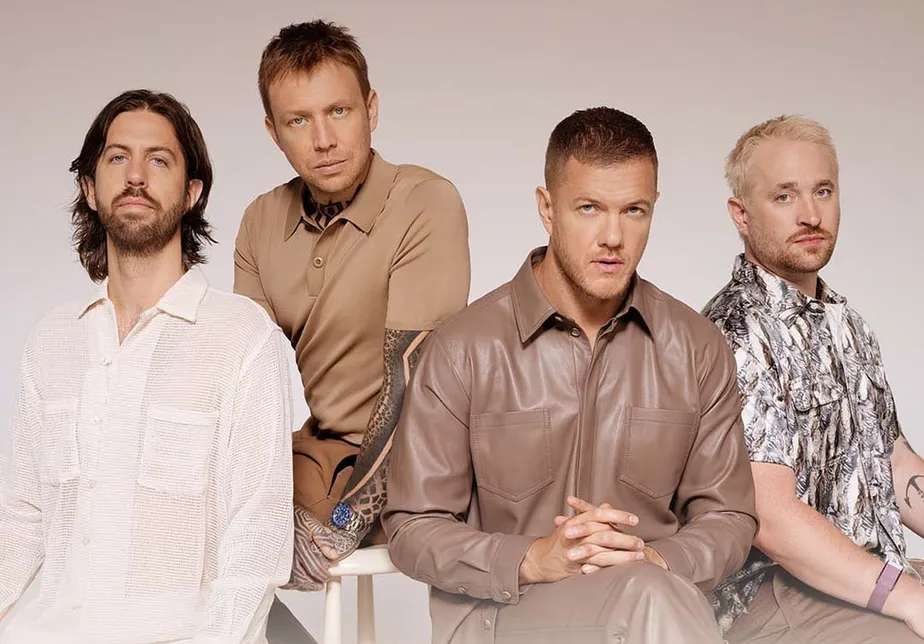

Avril Ramona Lavigne é uma cantora e compositora canadense, frequentemente referida por críticos e publicações musicais como a "Rainha do Pop-Punk" devido a sua conquista e impacto na indústria fonográfica.
Grupos (Grupinhos)
Now United é um grupo musical misto, também sendo o primeiro grupo global do mundo de música pop, formado em West Hollywood, Los Angeles County, EUA, em 2017. Criado por Simon Fuller e gerenciado pela XIX Entertainment, onde teve sua primeira formação escolhida mediante processos de seleção.
Bandas

Imagine Dragons é uma banda de pop rock formada em Las Vegas nos Estados Unidos, consistindo do vocalista Dan Reynolds, do guitarrista Wayne Sermon, do baixista Ben McKee e do baterista Daniel Platzman